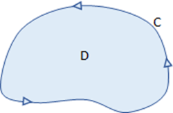

On this page, you will learn to:
- Evaluate line integrals using Green's Theorem.
Green's Theorem gives us a relationship between the line integral over a curve and the double integral of the region bounded within the curve. Recall the following terms.
- A region is simply connected if it doesn't have holes or breaks.
- A simple curve does not intersect itself.
- A curve is closed if it starts and ends at the same point.
- A smooth curve does not have any cusps or sharp corners, and its derivative is continuous.
- A curve is piecewise smooth if it can be described as a finite set of smooth curves.
In addition, we can also talk about the orientation of a curve, which refers to the direction that the curve is drawn or generated. We usually define a curve \(C\) to have a positive orientation if it is traversed one time in the counterclockwise direction. The region \(D\) below is simply connected and it is bounded by a simple, closed, positively oriented, smooth curve \(C\). Notice that \(D\) is to the "left" of \(C\) as you travel around the curve.

Greens' Theorem for Line Integrals: Let \(D\) be a simply connected region in the \(xy\)-plane bounded by a simple, closed, positively oriented, piecewise smooth curve \(C\). If \(\vec{F} = \langle P,Q \rangle\) where \(P\) and \(Q\) have continuous first partial derivatives in \(D\), then the line integral of the vector field \(\vec{F}\) over the curve \(C\) is equal to the curl inside the region bounded by \(C\).
\[\underset{C}{\mathop \oint} \, \vec{F} \cdot d\vec{r} = \underset{C}{\mathop \oint} \, P \, dx + Q \, dy = \underset{D}{\mathop \iint} \, \left( \frac{\partial Q}{\partial x} - \frac{\partial P}{\partial y} \right) \, dA\]The symbol \(\mathop \oint \) is often used to express that \(C\) is a closed curve.
The left part of the above formula is the line integral of the vector field \(\vec{F}\) over the curve \(C\). The middle portion is an alternate way to express the line integral as the result of computing the dot product \(\vec{F} \cdot d\vec{r} = \langle P,Q \rangle \cdot \langle dx,dy \rangle\). The right portion says that the line integral is equal to the double integral of the curl of \(\vec{F}\) over the region \(D\).
This definition introduces a new term which we call curl. But what is curl? To answer that, lets first back up to the definition of the vector field line integral, which involved a summation of \(\vec{F} \cdot \vec{T}\) values. This dot product represents a measure of how much of the field is pointing in the direction of the curve at each point along the curve, which might be thougt of as a rotational effect. If the curve is closed, then this dot product could be thought of describing how the field circulates around the region bounded by the curve. So, we say that the vector line integral of a closed curve, \(\oint_{C} \, \vec{F} \cdot d\vec{r}\), measures the amount of circulation caused by the field.
So what is curl? We will define a way to compute this more generally later, but for now lets look at the expression \(\frac{\partial Q}{\partial x} - \frac{\partial P}{\partial y}\). If we have the vector field \(\vec{F} = \langle P,Q \rangle\), then \(\frac{\partial Q}{\partial x}\) describes how the \(y\)-component is changing in the \(x\) direction and \(\frac{\partial P}{\partial y}\) describes how the \(x\)-component is changing in the \(y\) direction. If one of these is greater than the other, then we can conclude that the vector field itself has a rotational or spinning effect at each point within the field, which is what we call curl.
Putting this all together, Green's Theorem says that the circulation along the boundary curve is equal to the curl inside the region bounded by the curve. Here are a few additional things to note.
- The vector field \(\vec{F}\) is irrotational on a region \(D\) if the curl is 0 throughout the entire region \(D\), which means the field does not have a rotational or spinning effect within \(D\).
- The curl of a closed curve on a conservative field is 0. This is because we know that \(\frac{\partial Q}{\partial x} = \frac{\partial P}{\partial y}\) for conservative fields.
The next video gives an example where the given curve has a negative orientation. Remember that Green's Theorem requires a positive orientation. So what can we do if it is negative?
We can also use Green's Theorem to compute the area of a region. Recall that we can compute the area of a region using the double integral \(\iint_{R} dA\), meaning we assume the integrand function is \(f(x,y) = 1\). Let's apply that to Green's Theorem. What expressions could be used for \(P\) and \(Q\) so that \(\frac{\partial Q}{\partial x} - \frac{\partial P}{\partial y} = 1\)? Several options include \(\vec{F} = \langle 0,x \rangle\), \(\vec{F} = \langle -y,0 \rangle\), and \(\vec{F} = \frac{1}{2} \langle -y,x \rangle\). Applying Green's Theorem and expressing each of these as the line integral \(\int_{C} \, P \, dx + Q \, dy\) gives us the following.
Assuming we have a region \(D\) and curve \(C\) that satisfy the requirements for Green's Theorem, the area of \(D\) can be computed using any of the integrals below.
\[A_D = \underset{C}{\mathop \oint} \, x \, dy = -\underset{C}{\mathop \oint} \, y \, dx = \frac{1}{2} \underset{C}{\mathop \oint}\, (x \, dy - y \, dx)\]